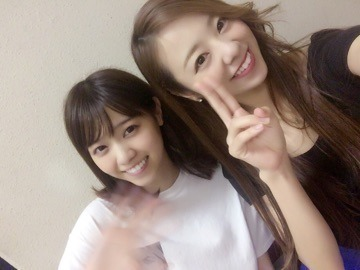
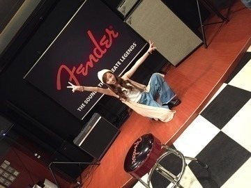
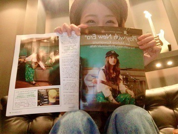
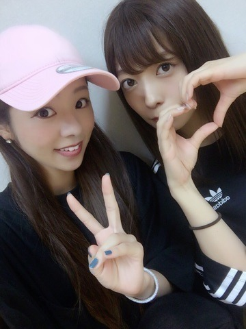

おつかれさまです♡

大分お待たせしちゃったね.＊
川村 まひろです！
『young guitar』生配信&生演奏、お疲れ様でした！ そして有難うございました！！
皆さんのおかげで，視聴者数&イイねの目標者数を達成する事ができ，『young guitar』の連載継続&乃木坂のliveでソロでギター披露！が決定致しました！！！
本当にありがとうございます♡

生配信の時には，メンバーも応援に駆け付けてくれ，全然知らなかったんだけど，沢山のメンバーからのメッセージももらったよ。そのメンバー達の言葉に嘘が無いのが伝わり，自分はこんなに愛されているんだ，そして信用してもらえてるんだ。と感じる事ができました♫ 今までこんな機会が無かったから，嬉しかったな。。。 young guitarで毎回お世話になってるスタッフさんからの映像もありました（ ; ; ）感謝
そしてまさかの海外のプロギターリスト、リジー&サム&ハーマンさんからもメッセージを頂きました！
本当に沢山の方に見て頂きました．
ファンの皆さん、知り合いの皆、そして業界の方々...。色々な所でのニュース、新聞紙、、 想像以上に沢山の方から注目して頂いていました。 想像以上に緊張し、想像以上に素敵なドキュメンタリーVTRに感動し、嬉しくて、、、そして期待と不安にかられました、、、、。
最高に幸せだったし楽しかったけどね、その日の夜はめちゃくちゃ悔しかったよ(*^^*) 泣いたよ。
この夏はやる事がありすぎて、仕事の事しか頭になかった。 ギターが上手くなりたくて必死だった、だけどいざ生配信が始まると緊張で指がふるえる。。 早弾きが上手くできない、音がかすれる。 ぃゃー！！ 本当にあの日の事をいつか笑いながら話したいですよ*\(^o^)/*
「私も初めての時は緊張して全然上手く弾けなかったよー*\(^o^)/*」って誰かに笑いながら話せるようになりたいですね！
この悔しさはめちゃくちゃいいバネになりますね。
皆さんは「ろってぃーカッコよかった！すごい！」って沢山のコメントくれましたね♡ それは心から本当に嬉しかったよ。 でも自分は納得してなかったってことです(*^^*)
私はまだまだ頑張りますよ～♡
見ててね。
ぬん。♡ 雑誌にはNEW ERAさんとのコラボコーナーもあるので、是非是非～♫♫ 大好きな帽子について語らせてもらいました．

ぁー、、あとあれだね♡
MUSIC STATIONウルトラFES
デビュー曲「ぐるぐるカーテン」ね。
どうだったかなー？
ウチら皆恥ずかしかったんだよー笑
流石に5年前の衣装は若すぎてね(^ ^)
でも頑張って皆で5年前に戻ったよ♡
まひろ&ゆうり

今日から三日間、liveです。
1日目広島、盛り上がってきましょう！！！
1.2.3.4.go ろってぃー♫